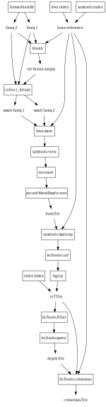

What it is:
Cgap is an automated gene extraction pipeline in Python. It handles large fastq files by filtering them with blast to produce smaller datasets. These datasets are then run through a consensus building pipline to generate fasta files.
How it works:
How to use it:
cgap is structured like a python module. This means that if you add it to the python path, it can be imported and customized. However, it also has command line function for easy use in bash.
Calling cgap in bash is easy:
python run_cgap.py
-refs_path
-forward
-reverse
-c 5;
To change alternate parameters in cgap, edit the config.py file. This determines the paths of outputfolders to be created, and the paths to the programs necessary to run cgap on your local computer.
To avoid the work of compiling software that will work with cgap. There is an image on the docker hub that contains all of the binaries necessary to run cgap. You can run from a standard docker run command, but it is suggested that you enter an interactive session, as it is easier.
Docker command:
docker run -itv <your directory>:/work theculliganman/cgap /bin/bash
Contact information and Thanks:
This code was written by Ryan Culligan with the support of the Madagascar Biodiversity Partnership and the Conservation Genetics Lab at OHDZ.